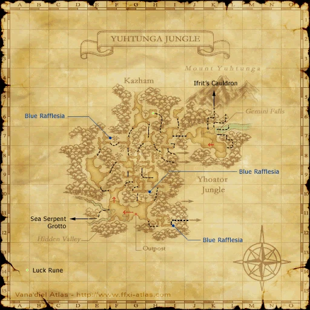
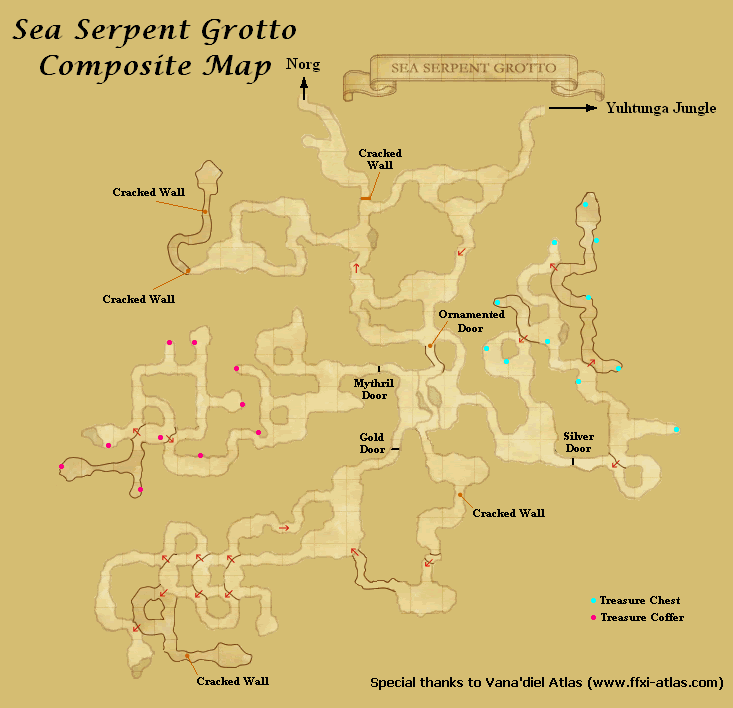
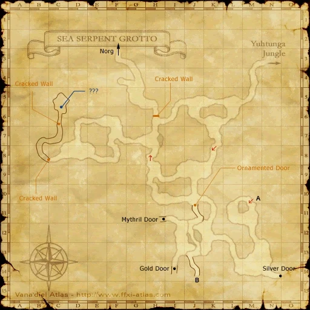
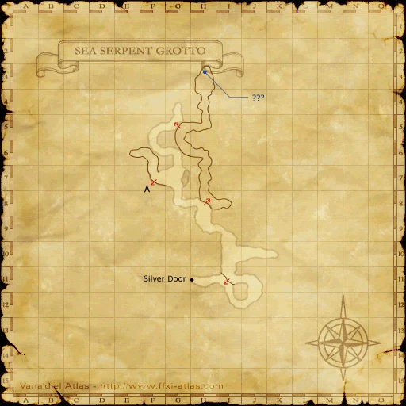
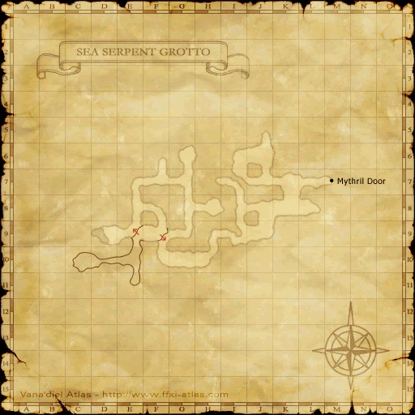
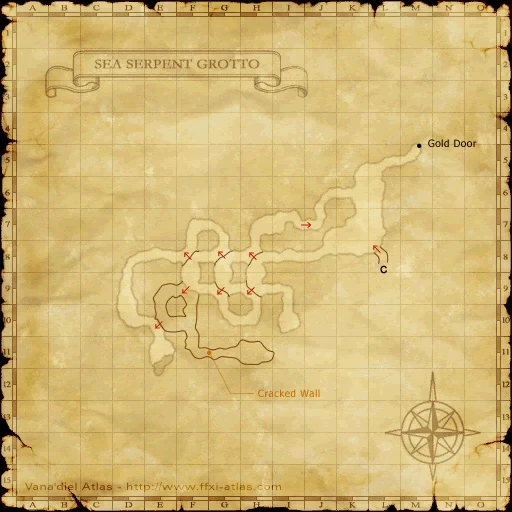
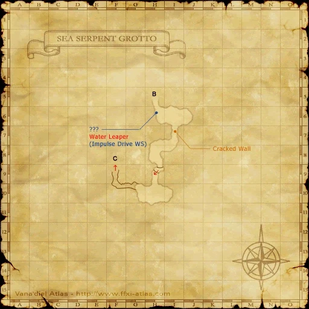

Before you begin
- Finish your nation’s Mission 5-2 (the Shadow Lord) and reach Rank 6; have access to the Rise of the Zilart areas.
- If you changed nationality, the native Norg trigger checks Rank 6 in your current nation.
Starting point
Zone entry; Tales’ Beginning if postponed · Norg · H-9
Walkthrough
- Travel to Norg through Sea Serpent Grotto, reached from Yuhtunga Jungle. Enter Norg to receive the story introduction.
- Choose to view the Zilart story. Finish the cutscene and confirm that the mission log now shows Welcome t’Norg.
- If you previously postponed the story, examine Tales’ Beginning at Norg H-9 and choose to start it.
Battle and progress notes
- The pinned native script uses Tales’ Beginning to resume a postponed start; merely zoning again may not resume it.
Completion and reward
Map of Norg key item; Welcome t’Norg becomes available.
What this opens
- Rise of the Zilart mission progression
Area maps
Open a zone below, then select a map to enlarge it. Match the named floors and grid coordinates in the steps; these are reference area maps, not a live position tracker.
Yuhtunga Jungle



Sea Serpent Grotto


















Norg


Zone guides
References
Steps are an original summary of the linked walkthrough and reviewed source. Other servers’ bonus rewards are not included. How to read requirements, waits and battlefield notes.
Additional level-75 reference
| Mission Name: | The New Frontier |
| Number: | ZM1 |
| Requirements: | Rank 6 in your home nation |
| Reward: | Zilart Rank 1 Map of Norg |
| Previous Mission | Next Mission |
| None | Welcome t'Norg |
Walkthrough
- After defeating the Shadow Lord and gaining rank 6, head to Norg for a cut-scene.
Game Description
- Mission Orders
- Vana'diel is expanding day by day. What adventures await you in the Outlands?
Adapted from Eden Wiki: The New Frontier · Contributors and history · CC BY-SA 4.0. Revision 8901. Layout, links and optional background text adapted for Zenith.